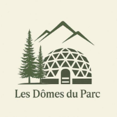

Activités récréatives et culturelles
- Belvédère et points de vue
- Interprétation du milieu naturel
- Observation de la faune et de la flore
- Sentiers d'interprétation

Plein air et culture
Composez un séjour actif : détente, sport, exploration et découvertes régionales.